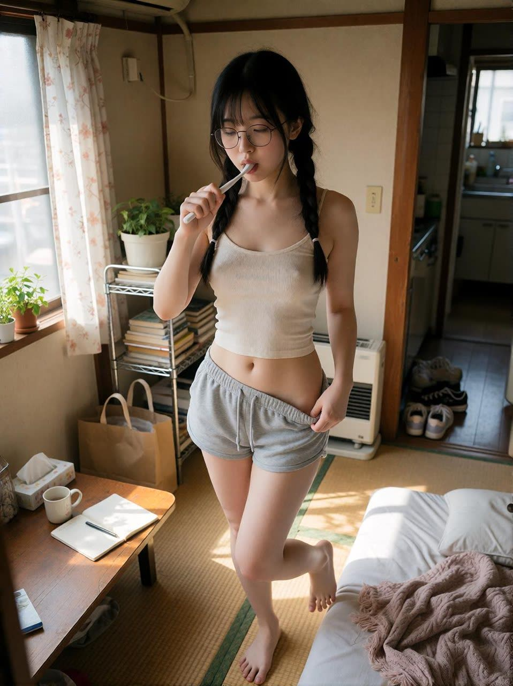

Candid daylight: toothbrush-in-mouth outfit hunt
REA-010RealismKrea 2by Senge (@senge0301)2026-09-25

Photoreal candid of an everyday moment — window daylight from the left, warm interior, mid-action.
Prompt
Rendering: photorealistic candid photograph of an everyday moment, natural window daylight coming from the left, warm indoor tones, 35mm lens, shallow depth of field, visible natural skin texture with fine pores, slight film grain, no retouching, Japanese apartment snapshot look. Subject: one young Japanese woman in her early twenties, long straight black hair in two loose braids over her shoulders, thin round metal-rim glasses, pale clear skin, no makeup, slightly sleepy expression, slim build. Outfit: a thin ivory ribbed spaghetti-strap cropped camisole, fitted and fully covering her torso, worn plain, and light heather-grey cotton drawstring sweat shorts, barefoot, no socks. Setting: a small old Japanese apartment room, beige tatami floor, low wooden table on the left with a tissue box, a mug and an open notebook with a pen, a metal shelving unit stacked with books and a canvas tote bag, a window with floral curtains and potted plants, a paper shopping bag and a small white heater on the floor, a futon mattress with a crumpled dusty-pink knit blanket, a doorway on the right leading to a narrow kitchen corridor with stacked sneakers at the entrance, hard sunlight and long shadows across the tatami. Shot: full-length medium shot, camera at eye level, she stands barefoot in the middle of the room brushing her teeth with a white toothbrush in her right hand, her left hand pulling the waistband of her shorts outward, one knee lifted slightly, looking down at the floor, unaware of the camera. Model: Krea2 | Steps: 10 | CFG: 1.0 | Res: 1050×1400 | Seeds: 700111 / 880022 / 909033
Tags: candid, window light, everyday moment